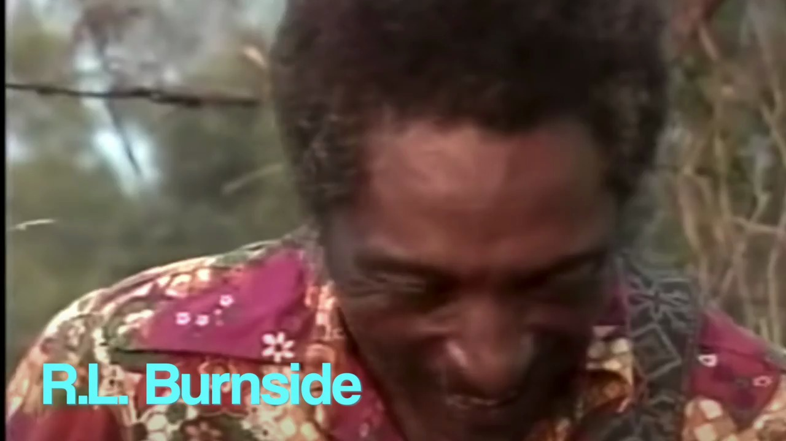

Key Moments





Summary & Script
The Hypnotic Sound of Hill Country Blues - A Guitar Lesson with a Guitar Teacher
Source: https://www.youtube.com/watch?v=a0z-2s5BRBs
Video ID: a0z-2s5BRBs
Overview
The video introduces Hill Country blues, a rhythmic, dance‑oriented offshoot of Mississippi blues distinct from Delta blues. The instructor explains the two main approaches—Delta Drone and Hypnotic Boogie—and breaks down the percussive right‑hand techniques that give the style its signature groove. By analyzing three genre pioneers (Fred McDowell, Junior Kimbrough, and R.L. Burnside), the lesson shows how to emulate their sound on electric or resonator guitars.
Topics Covered
What is Hill Country blues?
- Originated in Mississippi juke‑joints, upbeat and built for dancing.
- Emphasizes percussive strumming rather than melodic soloing.
Two core styles
- Delta Drone – slower, drone‑like bass note with repeating minor‑pentatonic/ blues‑scale riffs; often played on electric guitar.
- Hypnotic Boogie – groove‑centric, aggressive, rhythmic strumming that feels almost percussive; the thumb drives the low “bass” strings while the index finger adds syncopation.
Key right‑hand technique
- Thumb + thumb‑pick (optional) hits low strings firmly; index finger plucks higher strings on the off‑beats.
- Alternating pattern: down‑stroke on the bass, then a “chuck” on the treble strings, then mute.
- Emphasis on strong attack, especially on beats 2 and 4, to create the driving pulse.
Fred McDowell (solo, open‑E resonator)
- Uses thumb pick + index finger, heavy low‑string attack, and slide embellishments.
- Demonstrates alternating bass‑chuck pattern and muting for syncopation.
Junior Kimbrough (band setting, Eb‑standard electric)
- Shows the “drone” approach: a constant bass note with repetitive riffs on top.
- Right hand runs continuously, delivering a solid groove that fuels dancing.
R.L. Burnside (solo electric, tuned up to F)
- Relies on pure percussive strumming without a thumb pick; thumb attack is crucial.
- Demonstrates the same 1‑2‑3‑4 rhythmic feel, with strong slaps on the top strings.
Practice tips
- Start by alternating low‑E and a higher string, then add the “chuck” on beats 2/4.
- Use a thumb pick if long sessions cause thumb fatigue.
- Keep hand relaxed; positioning can be low and comfortable—not exaggerated.
Future content teaser
- The instructor promises more detailed song lessons and deeper technique breakdowns in upcoming videos.
Key Takeaways
- Hill Country blues is defined by its percussive, groove‑first guitar style, not by virtuosic soloing.
- Master the thumb‑driven bass + index‑finger syncopation pattern to capture the sound.
- Two main approaches: Delta Drone (steady drone + riffs) and Hypnotic Boogie (rhythmic strumming).
- Studying the masters—McDowell, Kimbrough, Burnside—reveals variations in tuning, picking, and band vs. solo contexts.
- A thumb pick can protect the thumb during the aggressive low‑string attacks.
- Consistent practice of the 1‑2‑3‑4 “down‑up‑chuck” rhythm is essential for authentic feel.
Notable Quotes
- “The most important thing in Hill Country blues is the percussive feel with the right hand.”
- “If you just play the bass line without the percussive right‑hand, it doesn’t sound anything like it.”
- “They don’t do that as much in any other style of blues; this is the most percussive style.”
- “You don’t have to use a thumb pick, but it helps save your thumb when you’re slamming hard on those top strings.”
Podcast Script
JORDAN: Hey everyone, welcome back to the show! I’m Jordan, and today we’re diving into the raw, hypnotic world of Mississippi hill country blues.
MIKE: And I’m Mike—thanks for joining us. We’re about to unpack what makes this style so different from the Delta blues you might already know.
JORDAN: First off, hill country blues isn’t just a regional label; it’s a whole vibe built around danceable grooves and percussive guitar work.
MIKE: Right, those juke‑joint nights where the music is meant to keep people moving—no sad slide licks, just relentless rhythm.
JORDAN: The core technique is a percussive right‑hand strum, often using a thumb pick and alternating between a low bass note and a chunky “chunka” on the higher strings.
MIKE: So it’s less about intricate soloing and more about creating a steady pulse that feels almost like a drumbeat, right?
JORDAN: Exactly. There are essentially two flavors: the “Delta drone,” which is a faster, electric take on traditional blues riffs, and the “hypnotic boogie,” a groove‑centric, repetitive pattern.
MIKE: And those repeats aren’t boring—they’re hypnotic because the guitarist layers a simple bass line with syncopated strums, giving the music that trance‑like quality.
JORDAN: To illustrate, let’s talk about the three pioneers: Fred McDowell, Junior Kimbrough, and R.L. Burnside, each with their own twist on the percussive approach.
MIKE: I love how Fred McDowell used open E tuning and a slide, while his right hand hammered the low strings with a thumb pick, almost like a built‑in metronome.
JORDAN: Junior Kimbrough took it electric, often in Eb standard, and kept that drone note constant—his thumb churned out a steady bass while the fingers added thin, blues‑scale riffs on top.
MIKE: And Burnside, he cranked the tuning up to F, abandoned the thumb pick, and still managed that relentless “one‑two‑three‑four” chug, showing you don’t need fancy gear, just raw energy.
JORDAN: The common thread across all three is that aggressive, percussive attack on the high strings and tight muting on the lows, which creates that signature groove.
MIKE: For listeners who want to try it, the takeaway is simple: start with a steady low‑note pulse, then slap the top strings in a syncopated pattern, and let your thumb do the heavy lifting.
JORDAN: Remember, the goal isn’t to play fast solos but to keep the rhythm driving so dancers can lose themselves in the groove.
MIKE: And that’s what makes hill country blues a party starter—it's music you feel in your chest as much as you hear with your ears.
JORDAN: So to sum up, focus on the right‑hand percussive strum, experiment with open tunings, and keep that bass drone steady.
MIKE: Mix in those hypnotic boogie patterns, and you’ve got the backbone of a style that’s both simple and endlessly captivating.
JORDAN: Thanks for hanging out, folks. Keep practicing those thumb‑pick chukas, and you’ll be bringing that Mississippi groove to any jam session.
MIKE: That’s a wrap from us—stay curious, keep the music moving, and we’ll catch you on the next episode.